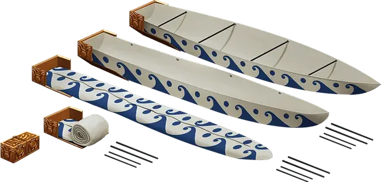

Складная лодка
Folding Boat
Чудесный предмет, редкий

Рекомендованная стоимость 501-5 000 зм
Этот предмет выглядит как деревянная коробка 12 дюймов в длину, 6 дюймов в ширину и 6 дюймов в высоту (30×15×15 сантиметров). Коробка весит 4 фунта и держится на плаву. Её можно открывать и хранить внутри вещи. У этого предмета есть три командных слова, и каждое из них произносится действием.
Первое командное слово разворачивает коробку в лодку 10 футов в длину, 4 фута в ширину и 2 фута в высоту (3×1,2×0,6 метров). У лодки есть пара вёсел, якорь, мачта и треугольный парус. В этой лодке с комфортом разместятся четыре существа Среднего размера.
Второе командное слово разворачивает коробку в корабль 24 фута в длину, 8 футов в ширину и 6 футов в высоту (7,3×2,4×1,8 метров). У корабля есть палуба, скамьи для гребли, пять пар вёсел, кормовое весло, якорь, палубная каюта и мачта с прямым парусом. На корабле с комфортом разместятся пятнадцать существ Среднего размера.
Если коробка стала судном, оно весит как обычное судно его размера, а всё, что хранилось в коробке, остаётся на судне.
Третье командное слово превращает судно в коробку, при условии, что на борту нет существ. Все предметы на судне, не помещающиеся в коробке, остаются вне коробки, когда та складывается. Все предметы на судне, которые могут поместиться в коробке, оказываются в коробке.